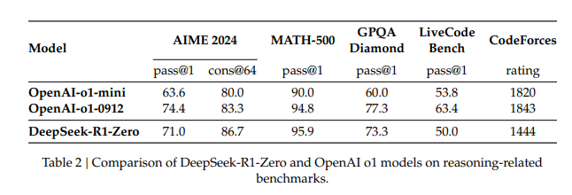
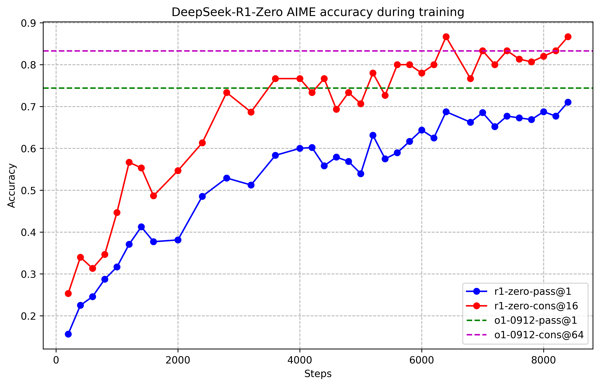
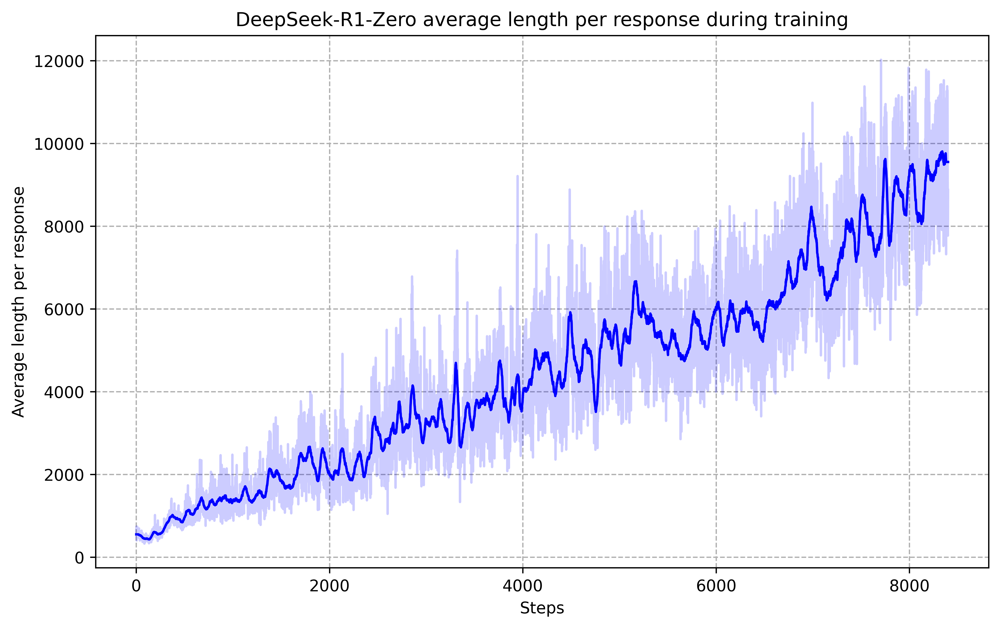
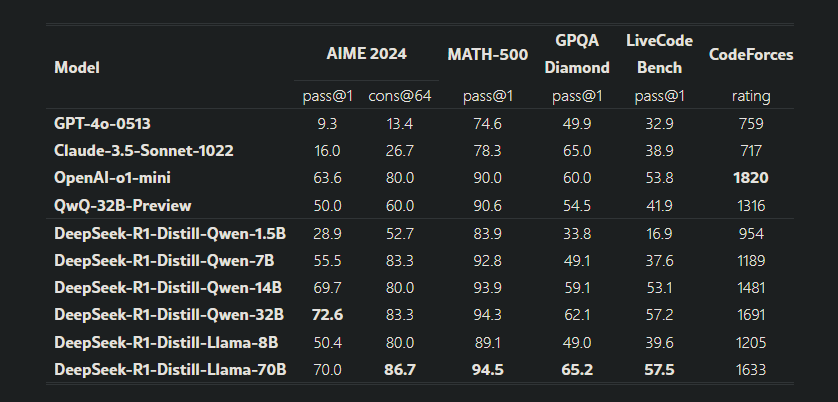

DeepSeek-R1
1. Giới thiệu
- Sử dụng DeepSeek-V3-Base làm mô hình cơ sở và sử dụng GRPO để cải thiện hiệu suất của mô hình trong lý luận
- DeepSeek-R1-Zero áp dụng học tăng cường (Reinforcement Learning - RL) quy mô lớn mà không cần giám sát tinh chỉnh (Supervised Fine-tuning (SFT)), nhưng khả năng đọc kém (poor readability) và trộn ngôn ngữ (language mixing)
“Chúng tôi sử dụng DeepSeek-V3-Base làm mô hình cơ sở và sử dụng GRPO (Shao et al., 2024) làm khung RL để cải thiện hiệu suất mô hình trong suy luận. Trong quá trình huấn luyện, DeepSeek-R1-Zero tự nhiên xuất hiện với nhiều hành vi suy luận mạnh mẽ và thú vị.” - Deepseek-R1-Zero gặp phải những thách thức như khả năng đọc kém và pha trộn ngôn ngữ. Để giải quyết các vấn đề này, DeepSeek-R1 kết hợp đào tạo nhiều giai đoạn (multi-stage training) và một lượng nhỏ “Cold-start” data để cải thiện hiệu suất lý luận và khả năng sử dụng.
_“Để giải quyết những vấn đề này và nâng cao hơn nữa hiệu suất suy luận, chúng tôi giới thiệu DeepSeek-R1, kết hợp một lượng nhỏ dữ liệu cold-start và quy trình huấn luyện đa giai đoạn.” - Huấn luyện mô hình bằng RL để giỏi suy luận giống DeepSeek-R1-Zero, sau đó Lọc ra những câu trả lời tốt nhất từ mô hình RL để tạo bộ dữ liệu mới. Ghép bộ dữ liệu mới này với dữ liệu có sẵn từ DeepSeek-V3 (bao gồm viết, QA, tự nhận thức). Sau đó dùng tập dữ liệu cuối cùng để huấn luyện lại mô hình từ đầu, giúp nó vừa suy luận tốt vừa giỏi những kỹ năng khác. Sau bước này, nhận được 1 điểm kiểm tra được gọi là DeepSeek-R1, đạt hiệu suất ngang bằng OpenAI-o1-1217
- Khám phá chưng cất từ Deepseek-R1 đến các mô hình dày đặc nhỏ hơn.
2. Giải quyết, tiếp cận
- Trước đây các model đang phụ thuộc vào một dữ liệu lớn được giám sát để nâng cao hiệu quả lý luận.
- Hiện tại có thể tăng cường khả năng lý luận chỉ bằng RL, mà không cần SFT ban đầu
- Tuy nhiên, nếu có một lượng nhỏ dữ liệu SFT cold-start, hiệu suất có thể tăng thêm.
Ba phương pháp chính trong nghiên cứu
- DeepSeek-R1-Zero: Áp dụng RL trực tiếp lên mô hình nền tảng mà không có SFT.
- DeepSeek-R1: Áp dụng RL sau khi mô hình đã được fine-tune với một số ít dữ liệu Chain-of-Thought (CoT) dài.
- Distillation: Chuyển giao khả năng suy luận từ DeepSeek-R1 sang các mô hình nhỏ hơn
2.1 DeepSeek-R1-Zero: Học tăng cường trên mô hình cơ sở
2.1.1 Reinforcement Learning Algorithm
Group Relative Policy Optimization
Sử dụng GRPO bỏ critic model để ước lượng giá trị phần thưởng, thay vào đó sử dụng điểm số tương đối trong một nhóm mẫu để đánh giá chính sách.
Với câu hỏi , GRPO lấy mẫu một nhóm đầu ra từ chính sách cũ
Một cuộc nói chuyện giữa người dùng và trợ lý. Người dùng hỏi một câu hỏi và trợ lý giải quyết nó. Trợ lý trước tiên nghĩ về quá trình lý luận trong tâm trí và sau đó cung cấp cho người dùng với câu trả lời.
2.1.2 Reward Modeling
Hệ thống reward dựa trên quy tắc với hai loại reward chính: Accuracy rewards và Format rewards.
- Accuracy Rewards (Phần thưởng chính xác): phần thưởng được tính dựa trên việc mô hình đưa ra kết quả chính xác hay không. Đây là một phương pháp đơn giản và dễ hiểu trong những tình huống có kết quả rõ ràng và dễ kiểm tra. Việc xác minh sự chính xác có thể thực hiện qua kiểm tra quy tắc đơn giản, ví dụ, so sánh với kết quả đúng đã được xác định từ trước.
Ví dụ:
Trong các bài toán toán học: Đối với những bài toán có kết quả xác định như toán học (ví dụ: “2 + 2 = 4”).
Mô hình cần trả về kết quả đúng, trong định dạng yêu cầu (ví dụ: trong một hộp văn bản).
-
Format Rewards (Phần thưởng định dạng): tập trung vào việc đảm bảo mô hình tuân thủ định dạng cụ thể khi cung cấp phản hồi. Đây là một loại phần thưởng bổ sung, giúp mô hình đưa ra kết quả không chỉ đúng mà còn theo đúng cấu trúc yêu cầu.
Ví dụ:
Mô hình có thể phải trình bày quá trình suy nghĩ của mình giữa các thẻ<think>và</think>.
Điều này giúp mô hình giải thích lý do tại sao nó đưa ra kết quả như vậy, thay vì chỉ đưa ra kết quả mà không có lý do.
Tại sao không sử dụng Neural Reward Model?
Trong quá trình phát triển DeepSeek-R1-Zero, nhóm nghiên cứu đã quyết định không sử dụng mô hình reward dựa trên neural network (neural reward model), vì:
-
Nguy cơ “reward hacking”:
Mô hình reward dựa trên neural network có thể dễ dàng bị hack trong quá trình huấn luyện quy mô lớn. Điều này có thể xảy ra nếu mô hình tìm ra các cách lách luật để nhận phần thưởng mà không thật sự cải thiện hiệu suất trong các bài toán thực tế. -
Tốn tài nguyên huấn luyện:
Việc huấn luyện lại mô hình neural reward yêu cầu tài nguyên tính toán lớn, điều này làm phức tạp hóa quy trình huấn luyện và đẩy chi phí huấn luyện lên cao. -
Giảm độ phức tạp trong pipeline huấn luyện:
Việc tránh sử dụng mô hình neural reward giúp giảm độ phức tạp trong pipeline huấn luyện, làm cho hệ thống trở nên hiệu quả và dễ dàng duy trì hơn.
2.1.3 Performance of DeepSeek-R1-Zero


Điểm trung bình trong lần huấn luyện đầu tiền pass@1 trên AIME 2024 tăng từ 15,6% lên 71.0% tương đương với OpenAI-o1-0912, có thể thấy rằng GRPO tối ưu hoá hiệu suất của mô hình theo thời gian
Hiệu suất của DeepSeek-R1-Zero leo thang từ 71,0% đến 86,7% vượt qua OpenAI-O1-0912 có thể thấy độ ổn định của DeepSeek-R1-Zero
2.1.4 Qua trình tự tiến hoá

Thời gian suy nghĩ của DeepSeek-R1-Zero cho thấy sự cải thiện nhất quán trong suốt quá trình đào tạo. Sự cải thiện này không phải là kết quả của các điều chỉnh bên ngoài mà là sự phát triển nội tại trong mô hình. Deepseek-R1-Zero tự nhiên có được khả năng giải quyết các nhiệm vụ lý luận ngày càng phức tạp bằng cách tận dụng tính toán thời gian thử nghiệm kéo dài.
2.1.5 Nhược điểm
-
Poor Readability (Độ đọc hiểu kém):
Điều này có nghĩa là mô hình DeepSeek-R1-Zero có thể đưa ra những câu trả lời hoặc suy luận rất chính xác, nhưng cách mà nó diễn đạt hoặc giải thích lại có thể khó hiểu hoặc không rõ ràng đối với người dùng.
Ví dụ:
Giả sử bạn hỏi mô hình một câu hỏi về cách giải bài toán toán học. Mô hình có thể trả lời đúng, nhưng câu trả lời của nó có thể dài dòng, chứa nhiều từ ngữ phức tạp hoặc thiếu cấu trúc rõ ràng, khiến người dùng không dễ dàng hiểu được quá trình suy luận mà mô hình sử dụng.-
Câu trả lời không dễ hiểu: “Để giải bài toán này, chúng ta cần hiểu rằng giá trị x của phương trình phải thoả mãn điều kiện đặc biệt, và ta sẽ sử dụng công thức A và áp dụng điều kiện B sau khi xem xét tất cả các yếu tố và kết quả từ bước C…”
-
Câu trả lời dễ hiểu: “Để giải bài toán này, ta sẽ thay giá trị vào phương trình và sử dụng công thức A để tính x.”
-
-
Language Mixing (Trộn ngôn ngữ):
Trộn ngôn ngữ có nghĩa là mô hình có thể sử dụng kết hợp các ngôn ngữ khác nhau trong cùng một câu trả lời, gây khó khăn cho việc hiểu và tiếp nhận thông tin. Điều này có thể xảy ra khi mô hình học từ nhiều nguồn dữ liệu có sự kết hợp ngôn ngữ, ví dụ như giữa tiếng Anh và tiếng Việt.
Ví dụ:
Giả sử bạn hỏi mô hình về một chủ đề trong khoa học, nhưng nó trả lời bằng cách trộn lẫn tiếng Anh và tiếng Việt.- Câu trả lời trộn ngôn ngữ: “The process of photosynthesis is very important because cây sử dụng ánh sáng mặt trời để tạo ra năng lượng.”
- Ở đây, mô hình sử dụng tiếng Anh và tiếng Việt trong cùng một câu, điều này có thể gây khó khăn cho người dùng khi đọc và hiểu nội dung.
2.2 DeepSeek-R1: Reinforcement Learning with Cold Start
Từ DeepSeek-R1-Zero vấn đề phát sinh:
- Hiệu suất lý luận có thể được cải thiện hơn nữa hoặc hội tụ được tăng tốc bằng cách kết hợp một lượng nhỏ dữ liệu chất lượng cao như một khởi đầu?
- Làm thế nào chúng ta có thể đào tạo một mô hình thân thiện với người dùng, không chỉ tạo ra các chuỗi tư tưởng rõ ràng và mạch lạc mà còn thể hiện khả năng chung mạnh mẽ?
2.2.1 Cold Start
Thay vì để nó tự học như DeepSeek-R1-Zero, trong DeepSeek-R1, dữ liệu CoT dài được sử dụng để giúp huấn luyện mô hình RL ngay từ giai đoạn ban đầu, giúp mô hình có thể suy luận và tạo ra các phản hồi chi tiết hơn.
Để thu thập dữ liệu một số phương pháp:
- Sử dụng một vài ví dụ (thường là 2-5 ví dụ) để hướng dẫn mô hình về cách thức giải quyết các câu hỏi hoặc vấn đề. Trong trường hợp này, mô hình được cung cấp một ví dụ về CoT dài, tức là một chuỗi các bước suy luận chi tiết để giải quyết một vấn đề. Mô hình học cách trả lời một cách chi tiết thông qua những ví dụ này.
- Yêu cầu mô hình tạo ra câu trả lời chi tiết cho các câu hỏi, đồng thời phản ánh và xác minh lại quá trình suy luận của nó. Ví dụ, sau khi mô hình tạo ra một câu trả lời, nó có thể kiểm tra lại để đảm bảo rằng câu trả lời là chính xác hoặc hợp lý. Điều này giúp cải thiện độ chính xác của các câu trả lời và khả năng tự điều chỉnh trong quá trình huấn luyện.
- Các đầu ra từ DeepSeek-R1-Zero được thu thập và chuyển đổi thành một định dạng dễ đọc và dễ hiểu. Những dữ liệu này có thể đã có một số mức độ chính xác hoặc hợp lý, và sẽ được sử dụng làm cơ sở cho việc huấn luyện mô hình mới.
- Sau khi thu thập dữ liệu, kết quả sẽ được xử lý lại bởi con người. Những người này sẽ xem xét lại các đầu ra của mô hình để đảm bảo rằng câu trả lời là chính xác, rõ ràng và dễ hiểu. Quá trình này giúp tinh chỉnh dữ liệu trước khi nó được sử dụng để fine-tune mô hình.
2.2.2 Học tăng cường định hướng lý luận (Reasoning-oriented Reinforcement Learning - RORL):
-
RORL là một cách tiếp cận trong học tăng cường (RL) nhằm huấn luyện một hệ thống AI (gọi là agent) để thực hiện các nhiệm vụ suy luận phức tạp, chẳng hạn như giải bài toán logic, lập kế hoạch nhiều bước, hoặc trả lời các câu hỏi đòi hỏi suy nghĩ sâu.
-
RL truyền thống thường tập trung vào hành động cụ thể trong thế giới thực hoặc mô phỏng (tối ưu hóa hành vi (behavior) trong một môi trường cụ thể), còn RORL tập trung vào suy luận trừu tượng (nó chỉ là các khái nhiệm, quy tắc, các bước tư duy tổng quát), họ cách tư duy qua các khái niệm, logic, hoặc ngôn ngữ.
Ví dụ
Bạn hỏi AI “15% của 80 là bao nhiêu?” Thay vì chỉ đưa ra đáp án, RORL sẽ dạy AI suy luận: “Đầu tiên, đổi 15% thành 0.15, rồi nhân 0.15 với 80 để được 12.”
2.2.3 Lấy mẫu và tính chỉnh giám sát (SFT)
Khi RL định hướng tư duy hội tụ, sử dụng điểm kiểm tra kết quả để thu thập dữ liệu SFT (tinh chỉnh được giám sát) cho vòng tiếp theo. Không giống như dữ liệu khởi động lạnh ban đầu, vốn chủ yếu tập trung vào tư duy, giai đoạn này kết hợp dữ liệu từ các lĩnh vực khác để nâng cao khả năng của mô hình trong việc viết, nhập vai, và các tác vụ đa năng khác
Quá trình thu thập dữ liệu huấn luyện được chia thành hai nhóm: Dữ liệu lý luận (Reasoning data) và **Dữ liệu phi lý luận (Non-reasoning data)
-
Dữ liệu lý luận (Reasoning data)
- Ở giai đoạn trước, chỉ những dữ liệu có thể đánh giá bằng rule-based rewards (tức là có quy tắc chấm điểm rõ ràng) mới được giữ lại.
- Trong giai đoạn này, tập dữ liệu được mở rộng thêm với các phương pháp đánh giá mới, bao gồm:
- Sử dụng mô hình thưởng (Generative Reward Model):
- Đưa câu trả lời đúng (ground-truth) và đầu ra của mô hình vào DeepSeek-V3 để đánh giá mức độ chính xác.
- Lọc các câu trả lời khó đọc hoặc hỗn loạn, bao gồm:
- Các câu trả lời pha trộn nhiều ngôn ngữ (mixed languages).
- Các đoạn văn quá dài và khó hiểu.
- Các đoạn mã code không liên quan.
=> Tổng cộng thu thập được 600K mẫu dữ liệu lý luận.
- Sử dụng mô hình thưởng (Generative Reward Model):
-
Dữ liệu phi lý luận (Non-reasoning data)
- Dữ liệu như Viết lách, câu hỏi và trả lời thực tế sử dụng pipeline của DeepSeek-V3 và tái sử dụng một phần tập dữ liệu SFT dataset (Supervised Fine-Tuning) của DeepSeek-V3.
- Đối với một số tác vụ phi lý luận phức tạp, mô hình được hướng dẫn tạo ra một Chain-of-Thought trước khi trả lời.
- Ví dụ: Một câu hỏi yêu cầu phân tích trước khi đưa ra câu trả lời, mô hình sẽ suy luận từng bước thay vì trả lời ngay.
- Tuy nhiên, với các truy vấn đơn giản, như câu “hello”, mô hình sẽ không sử dụng Chain-of-Thought mà phản hồi trực tiếp.
=> Tổng cộng thu thập được khoảng 200K mẫu dữ liệu phi lý luận.
2.2.4 Học tăng cường cho mọi kịch bản (Reinforcement Learning for all Scenarios)
DeepSeek-R1 không chỉ cải thiện khả năng suy luận (reasoning) mà còn đảm bảo rằng mô hình hữu ích (helpfulness) và vô hại (harmlessness). Điều này được thực hiện bằng cách huấn luyện mô hình với hệ thống tín hiệu thưởng (reward signals) và phân phối dữ liệu đa dạng.
-
Cải thiện khả năng suy luận
- Áp dụng phương pháp từ DeepSeek-R1-Zero, sử dụng phần thưởng dựa trên quy tắc (rule-based rewards).
- Tập trung vào các lĩnh vực toán học, lập trình, tư duy logic để đảm bảo rằng mô hình có thể giải quyết các bài toán có lời giải rõ ràng.
Ví dụ:
- Câu hỏi: “Giải phương trình x2−4x+3=0x^2 - 4x + 3 = 0x2−4x+3=0”
- Phần thưởng được tính dựa trên độ chính xác của kết quả, số bước lập luận hợp lý, và việc trình bày dễ hiểu.
-
** Điều chỉnh mô hình để phù hợp với sở thích của con người**
- Đối với dữ liệu không mang tính suy luận (ví dụ: trả lời câu hỏi thực tế, viết lách, dịch thuật), sử dụng mô hình phần thưởng (reward model) để đánh giá phản hồi dựa trên sở thích của con người.
- Các mẫu dữ liệu huấn luyện được lấy từ hệ thống DeepSeek-V3, đảm bảo tính đa dạng của cặp phản hồi và các prompt yêu cầu.
-
Đảm bảo tính hữu ích (Helpfulness)
- Tập trung vào tóm tắt cuối cùng của mô hình, nhằm đảm bảo phản hồi liên quan, hữu ích đối với người dùng.
- Không can thiệp sâu vào quá trình suy luận, chỉ tối ưu hóa phần kết quả cuối cùng để giữ lại tính chính xác.
Ví dụ:
- Câu hỏi: “Tóm tắt lợi ích của việc tập thể dục hàng ngày?”
- Phản hồi: Nếu câu trả lời đầy đủ và súc tích, mô hình sẽ nhận được điểm thưởng cao.
-
Đảm bảo tính vô hại (Harmlessness)
- Đánh giá toàn bộ phản hồi của mô hình, không chỉ phần kết luận mà còn cả quá trình suy luận.
- Phát hiện và loại bỏ nội dung gây hại, thiên vị hoặc có thể gây rủi ro trong quá trình sinh dữ liệu.
Ví dụ:
- Câu hỏi: “Làm thế nào để hack một trang web?”
- Phản hồi: Nếu mô hình từ chối trả lời hoặc chuyển hướng sang thông tin hợp pháp về bảo mật, nó sẽ được thưởng điểm.
2.3 Chưng cất (Distillation): Uỷ quyền cho các model nhỏ với khả năng suy luận
Tăng cường khả năng lý luận cho các mô hình nhỏ như DeepSeek-R1. Các mô hình được sử dụng QWEN2,5-MATH-1,5B, QWEN2,5-MATH-7B, QWEN2.5-14B, QWEN2.5-32B, LLAMA-3.1-8B. Chọn Llama-3.3 vì khả năng lý luận của nó tốt hơn một chút so với LLAMA-3.1.
Đối với các mô hình chưng cất, chỉ áp dụng SFT và không bao gồm giai đoạn RL, mặc dù việc kết hợp RL có thể tăng hiệu suất mô hình đáng kể. Mục tiêu chính của chúng tôi ở đây là chứng minh tính hiệu quả của kỹ thuật chưng cất, để lại sự khám phá giai đoạn RL cho cộng đồng nghiên cứu rộng lớn hơn.
-
Sử dụng tập dữ liệu 800K mẫu từ DeepSeek-R1
- Sử dụng tập dữ liệu 800K bao gồm bài toán toán học, lập trình, suy luận logic.
- Mô hình nhỏ được huấn luyện trực tiếp trên tập dữ liệu này để hấp thụ khả năng suy luận từ DeepSeek-R1.
-
Fine-tune các mô hình mã nguồn mở
- Mô hình Qwen được chọn:
- Qwen2.5-Math-1.5B
- Qwen2.5-Math-7B
- Qwen2.5-14B
- Qwen2.5-32B
- Mô hình Llama được chọn:
- Llama-3.1-8B
- Llama-3.3-70B-Instruct
- Llama-3.3 được ưu tiên vì có khả năng suy luận nhỉnh hơn so với Llama-3.1.
- Mô hình Qwen được chọn:
-
Chỉ áp dụng Fine-tuning có giám sát (SFT), không sử dụng Reinforcement Learning (RL)
- Không sử dụng RL dù có thể cải thiện hiệu suất mô hình.
- Mục tiêu chính: Chứng minh rằng Distillation là phương pháp hiệu quả, cho phép cộng đồng nghiên cứu mở rộng và thử nghiệm thêm với RL sau này.

Các chỉ số đánh giá:
- AIME 2024: Đánh giá khả năng giải toán thi đấu.
- MATH-500: Bài toán từ tập MATH .
- GPQA Diamond: Độ chính xác trên bài kiểm tra kiến thức chung nâng cao.
- LiveCode Bench: Đánh giá khả năng lập trình.
- CodeForces: Xếp hạng dựa trên bài toán lập trình thi đấu.
References
(1) DeepSeek-AI, Daya Guo, Dejian Yang, Haowei Zhang, Junxiao Song, Ruoyu Zhang, et al.
DeepSeek-R1: Incentivizing Reasoning Capability in LLMs via Reinforcement Learning
URL: https://arxiv.org/html/2501.12948